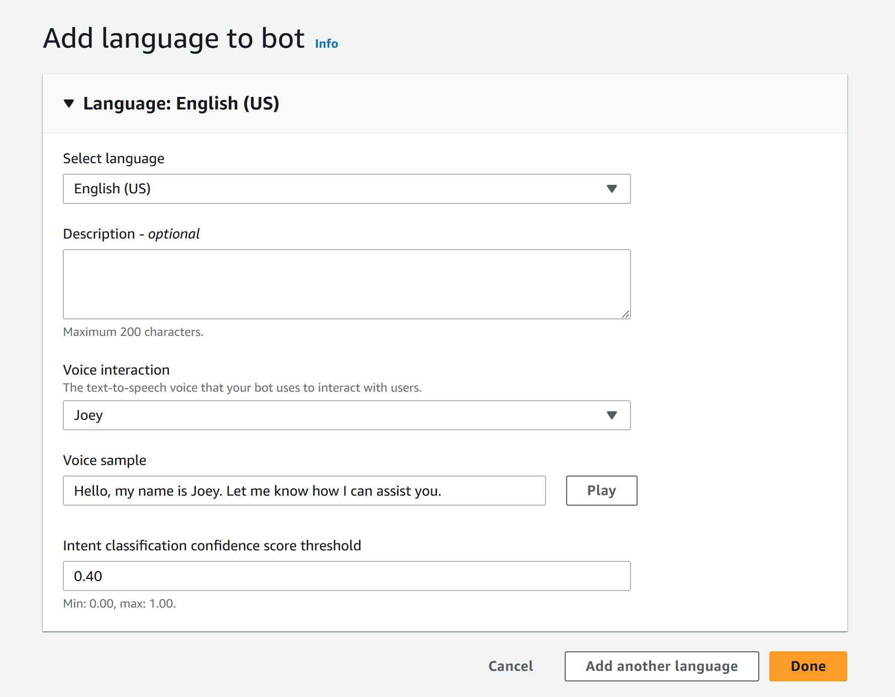
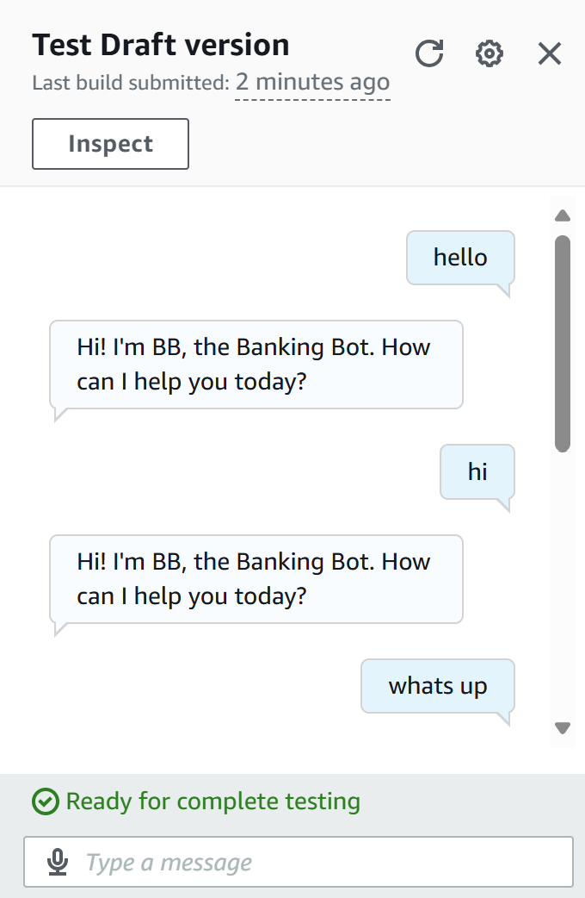
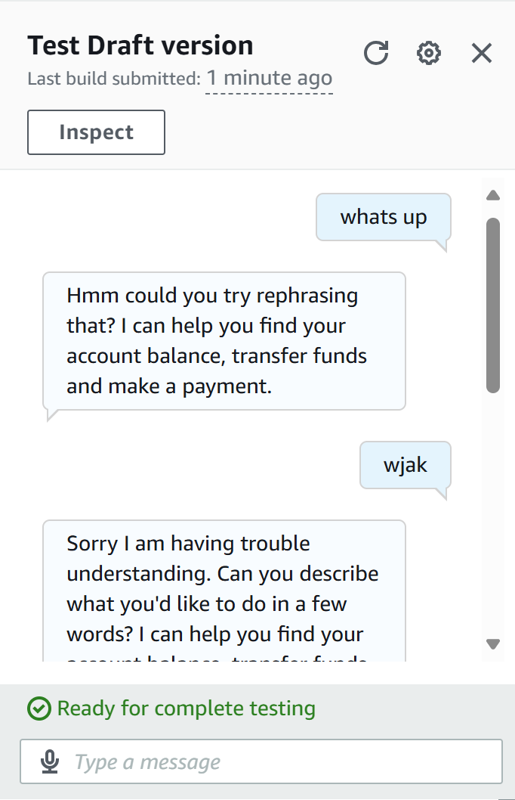

Developed a fully functional chatbot using Amazon Lex, a conversational AI service that enables natural language understanding (NLU) and automatic speech recognition (ASR). The chatbot was configured to handle user intents, provide responses, and manage fallback scenarios for unrecognized inputs.
Gallery



×
What I learned
Gained hands-on experience with Amazon Lex for building ChatBots
Recognized the critical role of fallback intents in ensuring robust and user-friendly chatbot interactions.
Gained insight into how variations in responses can improve user engagement and satisfaction.
Steps I took
Setup and Configuration
Created a chatbot from scratch using Amazon Lex
Adjusted the intent classification confidence score to a default value of 0.40 to ensure response accuracy.
Intent Creation
Developed the "WelcomeIntent" to greet users upon interaction.
ATested and implemented the "FallbackIntent," ensuring the chatbot gracefully handles unrecognized inputs.
Enhancements
Added variations to fallback responses, providing a personalized and human-like interaction for end-users.
Configured closing responses to explain scenarios where user input couldn't be processed effectively.
Troubleshooting
Identified and resolved issues with fallback responses during testing.
What I Learned
Recognized the critical role of fallback intents in ensuring robust and user-friendly chatbot interactions.
Gained insight into how variations in responses can improve user engagement and satisfaction.
Outcome
Successfully deployed a functional chatbot. This project strengthened my understanding of AWS services.